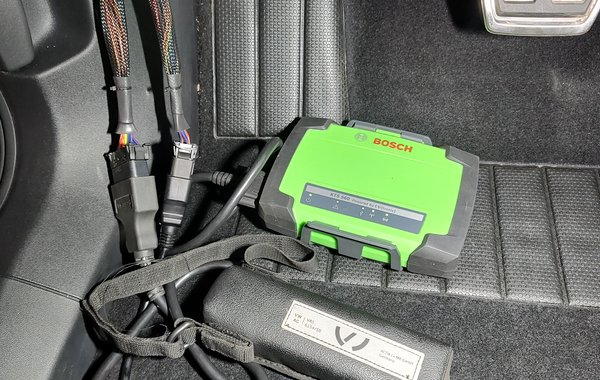

Xưởng dịch vụ độc lập cho xe thuộc các thương hiệu
Volkswagen Audi Škoda SEAT CUPRA Xe thương mại Volkswagen
Dịch vụ sửa chữa ô tô từ năm 1994.Chẩn đoán ODIS, đo kiểm chuyên sâu và quy trình của nhà sản xuất.


Chăm sóc xe của bạn chu đáo hơn.Để bạn bớt lo lắng.